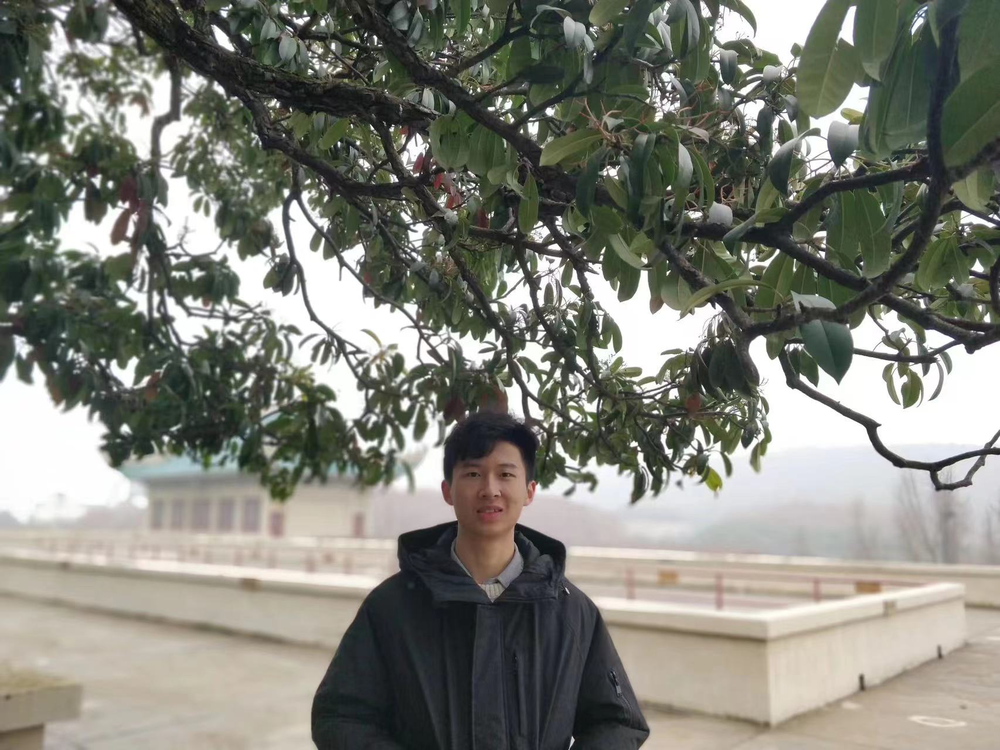

Qihuang Zhong (钟起煌)
Home
[ Short Bio, Research Interests, News, Job Experience, Education, Honors ]
|  |
Qihuang Zhong
Ph.D. student at Wuhan University,
E-mail: zhongqihuang@whu.edu.cn |
Short Bio
I am currently pursuing a Ph.D. degree in Artificial Intelligence from the School of Computer Science, Wuhan University. I was a research intern at JD Explore Academy. I have authored or co-authored over 10 papers at top conferences and international journals, including ACL, EMNLP, COLING, IEEE TKDE, IEEE TASLP and etc. I was supported by the Fundamental Research Project for Young Professional from NSFC (首批国自然博士生基金, PR) and, was supported by the Youth Talents Support Project - Doctoral Student Special Program (首届中国科协青年人才托举工程-博士生专项, PR). I won the general language understanding (GLUE) and more difficult language understanding (SuperGLUE) challenges.
Research Interests
Large Language Model
chain-of-thought, [ChatGPT vs. BERT (arxiv23)], [ChatGPT for NMT (EMNLP23)],
instruction-tuning,
efficient training/inference, [ZSAQ (EMNLP23), ATKD (ACL24), KID (EMNLP24)],
safety. [ROSE (ACL24)]Discriminative Language Model
sufficient/efficient pretraining, [SE4PLMs (ACL23), ScTD (ACL23), E2S2 (IEEE TKDE), Vega v1 (Technical report), Vega v2 (Technical report)],
effective model adaptation, [PANDA (IEEE TKDE)],
model robustness/generalization. [FSAM4PLM (EMNLP22), AdaSAM (Neural Networks)],Natural language Understanding and Generation
sentiment analysis, [KGAN (IEEE TKDE), C3DA (COLING22), UIKA (IEEE TASLP)],
text classification,[SE4DA (EMNLP23)],
machine translation and etc.[SE4NMT (ACL23)]
News
[05/2025] One long paper has been accepted by ACL2025.
[09/2024] One long paper has been accepted by EMNLP2024.
[05/2024] Talk at Student Forum of China Society of Image and Graphics (CSIG学生会员分享论坛：面向通用语言大模型的预训练与微调技术研究, PR).�
[05/2024] Two long papers (1 main and 1 findings) have been accepted by ACL2024. Cheers! 🥳🥳
[03/2024] One regular paper has been accepted by IEEE Transactions on Knowledge and Data Engineering. [Paper] [Code]
[12/2023] One regular paper has been accepted by IEEE Transactions on Knowledge and Data Engineering. [Paper] [Code]
[10/2023] Three long papers (2 main and 1 findings) have been accepted by EMNLP2023. Cheers! 🥳🥳
[06/2023] One regular paper has been accepted by IEEE/ACM Transactions on Audio, Speech, and Language Processing.
[05/2023] Three papers (2 long and 1 short) have been accepted by ACL2023. Cheers! 🥳🥳
[04/2023] Our Vega series Large Language Models (织女系列自然语言大模型) have won the 2022 Technology Golden Award ("京东集团技术金项奖", the highest tech award at JD.com, Inc). [PR]
[04/2023] New achievement reached! Google Scholar citation count exceeds 100. 🥳
[03/2023] We release a report towards making the most of ChatGPT for machine translation. [Arxiv] [Code]
[02/2023] One regular paper has been accepted by IEEE Transactions on Knowledge and Data Engineering. [Paper] [Code]
[02/2023] We release a report about language understanding ability of ChatGPT. [Arxiv] [Code]
[10/2022] Our Vega v2 model got 1st place on the difficult language understanding (SuperGLUE) leaderboard. [PR]
[10/2022] One long paper has been accepted by Findings of EMNLP22. [Paper] [Code]
[08/2022] One long paper has been accepted by COLING22. [Paper] [Code]
[01/2022] Our Vega v1 model got 1st place on the General Language Understanding Evaluation (GLUE) leaderboard. [PR]
[09/2021] Start my internship in JD Explore Academy.


Job / Internship Experience
JD Explore Academy, September 2021 -- May 2023
Research on sufficient/efficient language model pretraining and fine-tuning in JDEA-NLP group, advised by Liang Ding and Dacheng Tao.
Honors & Awards
- 2024.10 First Prize in Academic Innovation; Wuhan University;
- 2023.12 Pacemaker to Outstanding Postgraduate; Wuhan University;
- 2023.11 Lei Jun Excellence Scholarship; Wuhan University;
- 2023.04 2022 Technology Golden Award; JD Explore Academy;
- 2022.01 Outstanding Intern; JD Explore Academy;
- 2021.10 Leijun Scholarship; Wuhan University;
- 2020.06 Excellent Undergraduate Graduates; Wuhan University;
- 2019.10 National Encouragement Scholarship; Wuhan University;
- 2018.10 National Encouragement Scholarship; Wuhan University;
- 2017.10 National Encouragement Scholarship; Wuhan University;